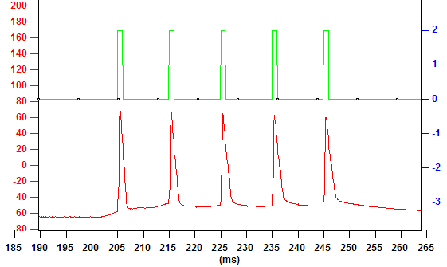

The amplitude is 0.18 nA.
The pulse starts at 100 ms. The width of the pulse is 30 ms. There is only one pulse in a burst and one burst in the command. Thus, the interval between pulses and the interval between bursts do not have any effect on the command.
The figure on the right displays the command waveform and the voltage response from a mouse CA1 pyramidal neuron.

There are 5 pulses in each burst and the interval between two pulses is 10 ms.
There are 10 bursts and the interval between two bursts is 200 ms.
